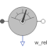

RelSpeedSensorIdeal sensor to measure the relative angular velocity between two flanges |

|
Information
This information is part of the Modelica Standard Library maintained by the Modelica Association.
Measures the relative angular velocity w_rel between two flanges in an ideal way and provides the result as output signal w_rel (to be further processed with blocks of the Modelica.Blocks library).
Connectors (3)
| flange_a |
Type: Flange_a Description: Left flange of shaft |
|
|---|---|---|
| flange_b |
Type: Flange_b Description: Right flange of shaft |
|
| w_rel |
Type: RealOutput Description: Relative angular velocity between two flanges (= der(flange_b.phi) - der(flange_a.phi)) as output signal |
Used in Components (1)
|
Modelica.Electrical.Machines.Sensors Mechanical power = torque x speed |